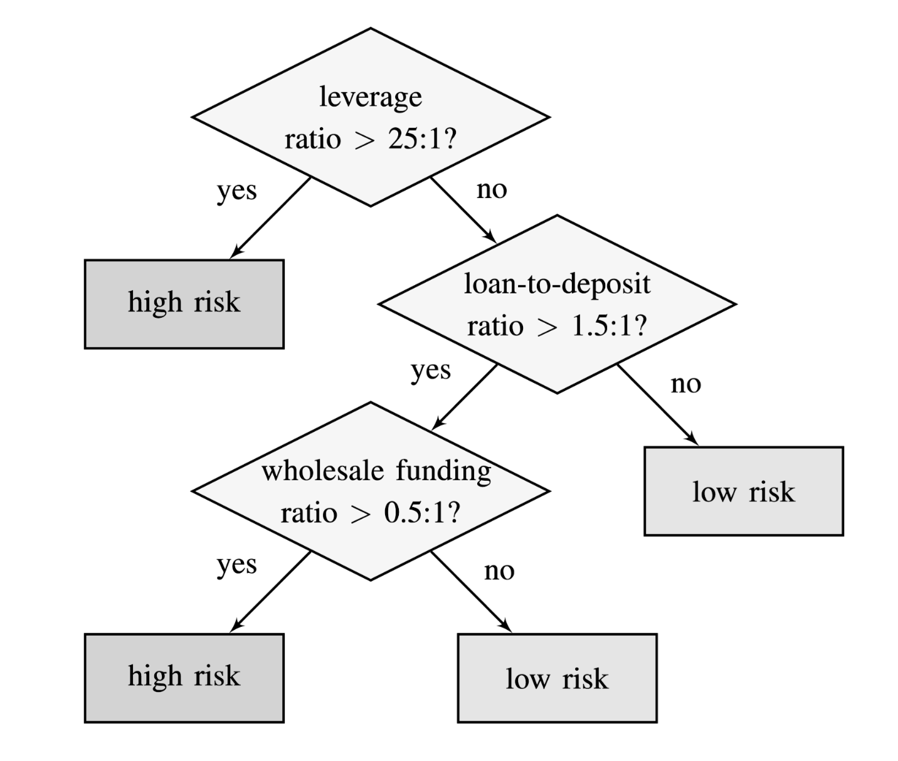
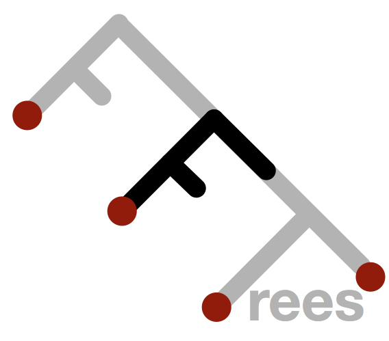
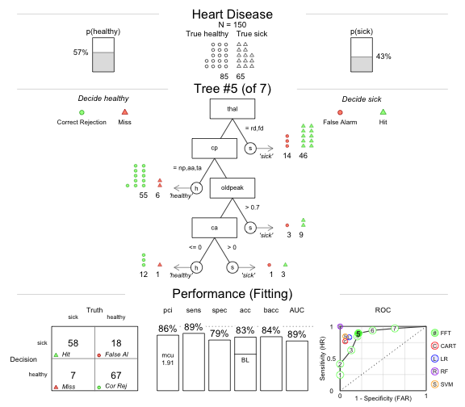
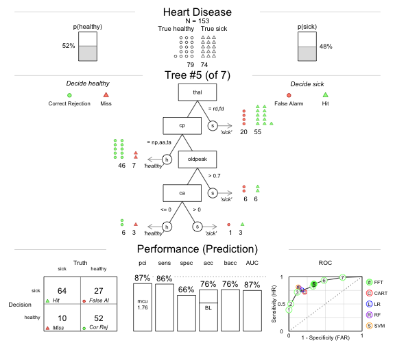
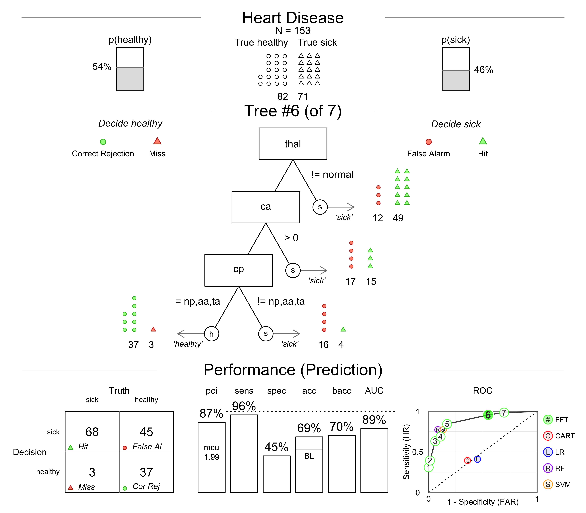
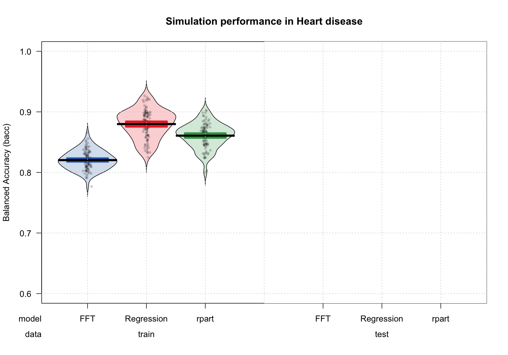

FFTrees
An R package to create, visualise, and impliment fast and frugal decision trees
Nathaniel Phillips, Economic Psychology, University of Basel
BaselR Meeting, March 2017
A growing problem at the Cook County Hospital in 1996

Patient overload

Diagnosing ER patients with chest pain.
Situation
- 30 people a day worried about a heart attack.
- Coronary care bed costs $2,000 a night and requires a 3 day stay.
Decision task
- Send people with heart attacks to the coronary care bed, and healthy patients to a normal bed.
Multiple, uncertain measures
- Blood pressure, Stethescope,
- Questions: How long? How much? During exercise? History? Cholesterol? Drugs? etc.
- Electrocardiogram (ECG) reading.
Decisions by intuition was not working
Study: How much do doctors agree on diagnoses?
- Asked doctors to estimate from 0 to 100 the probability of a heart attack of 20 separate patients.
Conclusion: Terribly low agreement
"In each case the answers we got pretty much ranged from 0 to 100. It was extraordinary" (Brenden Reilly, Department of Medicine chairman)
Solution
- A decision tree developed by a cardiologist named Lee Goldman.

Why use a decision tree?
- Speed, Easy of understanding and implementation
The Cook hospital decision tree
- Over two years, the performance of the tree was compared to the physician's intuitive judgments.
Results
Tree dramatically outperformed the doctor's clinical judgments and resulted in far fewer false-positives and huge cost savings
To this day, the tree is still used at the hospital.

Fast and frugal decision trees (FFT)
A fast and frugal decision tree (FFT) is a very simple, highly restricted decision tree.
In an FFT, each node has exactly two branches, where at least one branch is an exit branch (Martignon et al., 2008).
FFTs are even faster and require less information than non-FFT trees.

Depression Tree
- Jenny et al. (2013): Simple rules for detecting depression

Bank failure
- Neth et al. (2013): Homo heuristics in the financial world: From risk management to managing uncertainty

Problem
There is no off-the-shelf method to construct FFTs
Task
- Create an easy-to-use R package that constructs, visualizes, and implements FFTs called
FFTrees.

FFTrees
# v1.1.8 available on CRAN
install.packages("FFTrees")
# v1.2.0 on github
devtools::github("ndphillips/FFTrees", include_vignette = TRUE)
Heart disease datatset
library(FFTrees)
head(heartdisease)
## age sex cp trestbps chol fbs restecg thalach exang oldpeak slope
## 138 62 1 aa 120 281 0 hypertrophy 103 0 1.4 flat
## 250 62 1 aa 128 208 1 hypertrophy 140 0 0.0 up
## 260 57 1 aa 124 261 0 normal 141 0 0.3 up
## 173 59 0 a 174 249 0 normal 143 1 0.0 flat
## 105 49 1 np 120 188 0 normal 139 0 2.0 flat
## 19 48 0 np 130 275 0 normal 139 0 0.2 up
## ca thal diagnosis
## 138 1 rd 1
## 250 0 normal 0
## 260 0 rd 1
## 173 0 normal 1
## 105 3 rd 1
## 19 0 normal 0
Creating a Heart Disease FFT
# Step 1: Create training and test data
set.seed(100)
heartdisease <- heartdisease[sample(nrow(heartdisease)),]
heart.train <- heartdisease[1:150,]
heart.test <- heartdisease[151:303,]
# Step 2: Create heart.fft
heart.fft <- FFTrees(formula = diagnosis ~.,
data = heart.train,
data.test = heart.test)
Evaluating a decision algorithm

FFT summary statistics
# Step 3: Summary statistics
heart.fft
## [1] "7 FFTs using up to 4 of 13 cues"
## [1] "FFT #3 uses 4 cues {thal,ca,cp,oldpeak} with the following performance:"
## train test
## n 150.00 153.00
## pci 0.87 0.88
## mcu 1.87 1.62
## acc 0.81 0.80
## bacc 0.79 0.79
## sens 0.63 0.63
## spec 0.95 0.94
Heart disease cue accuracies
plot(heart.fft, what = "cues", main = "Heart Disease")

Heart Disease FFT
plot(heart.fft,
main = "Heart Disease",
decision.names = c("healthy", "sick"),
stats = FALSE)

Heart Disease FFT
plot(heart.fft,
main = "Heart Disease",
decision.names = c("healthy", "sick"))
Heart Disease FFT | Training

Heart Disease FFT | Prediction

Heart Disease FFT | ROC

Heart Disease FFT | Tree 3

Heart Disease FFT | Tree 6

How do FFTs compare to regression and CART?
- Simplicity: How much information is used and how is it combined?
- Accuracy: How well can the algorithm predict new data?
Heart disease: regression
- 4 significant cues: (sex, cp, trestbps, ca)

Heart disease: rpart
- 8 cues (thal, cp, oldpeak, ca, age, exang, thalach, chol)
Heart disease: FFT
- 3 cues (thal, cp, ca)
- However, when applied to the data, only about 1.75 cues are even used on average. As a result, > 85% of the cue information is completely ignored.

Heart disease classification accuracy

Heart disease classification accuracy

Heart disease classification accuracy
How accurate are FFTs built by FFTrees?
- Prediction competition
- 10 datasets taken from the UCI machine learning database
- 50% Fitting / 50% Prediction subsample splitting, DV: balanced accuracy = (sensitivity + specificity) / 2
| dataset | cases | cues | base.rate |
|---|---|---|---|
| arrhythmia | 68 | 280 | 0.29 |
| audiology | 226 | 70 | 0.10 |
| breast | 683 | 10 | 0.35 |
| bridges | 92 | 10 | 0.39 |
| cmc | 1473 | 10 | 0.35 |
Table: 5 of the 10 prediction datasets
Aggregate simulation prediction results

Aggregate simulation prediction results

Aggregate simulation prediction results

Simulation prediction results by dataset

Conclusions
- FFTrees makes it easy to develop simple, effective, transparent decision trees.
- Decision aids built with FFTrees can compete with complex, compensatory algorithms in prediction.
Next steps
- Speed up code with c++ or Julia.
- Include cue costs into algorithm.
- Heart disease FFT: $75.91
- Regression: $300
- Quantify when and how a tree fails when it is applied to data over time.